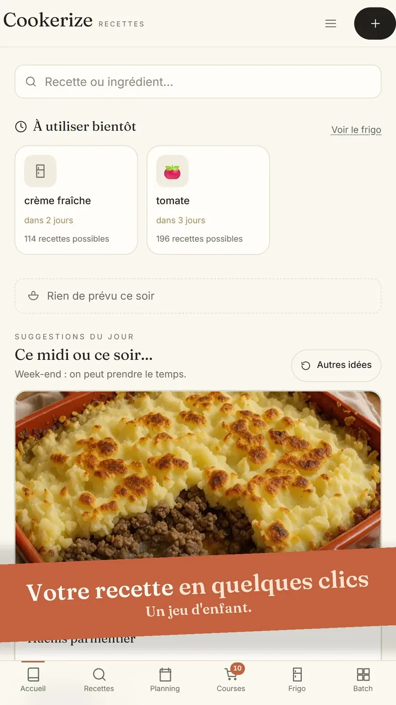
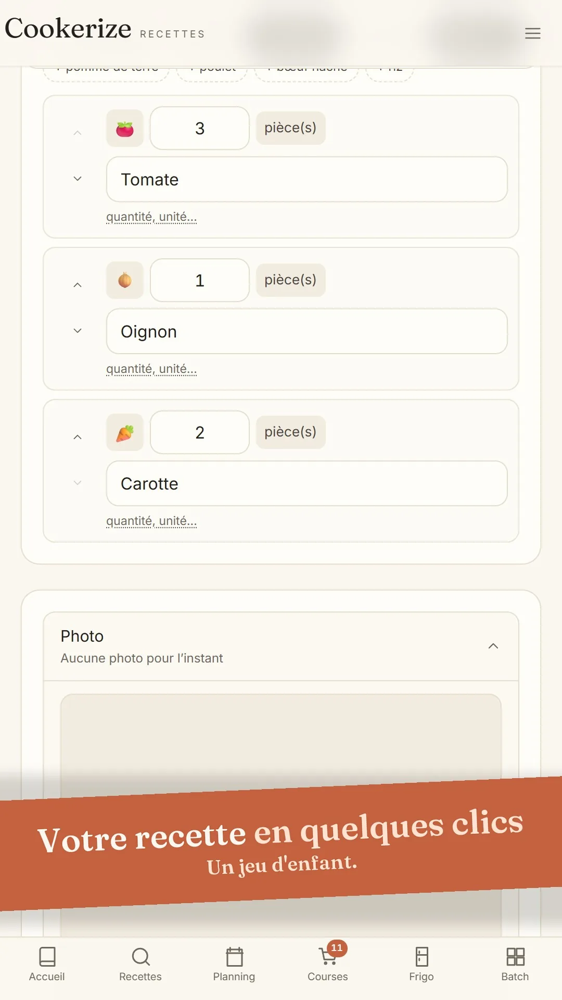
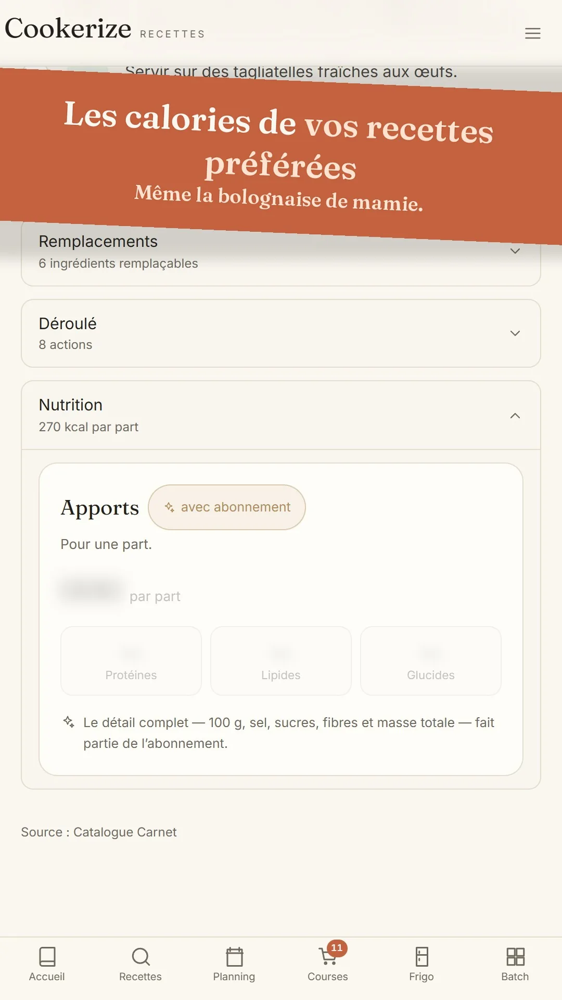
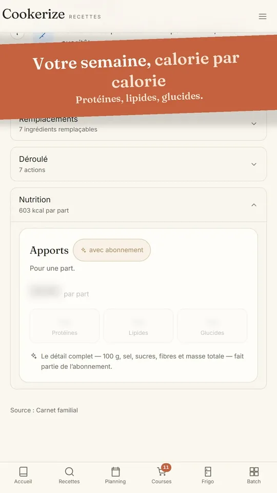
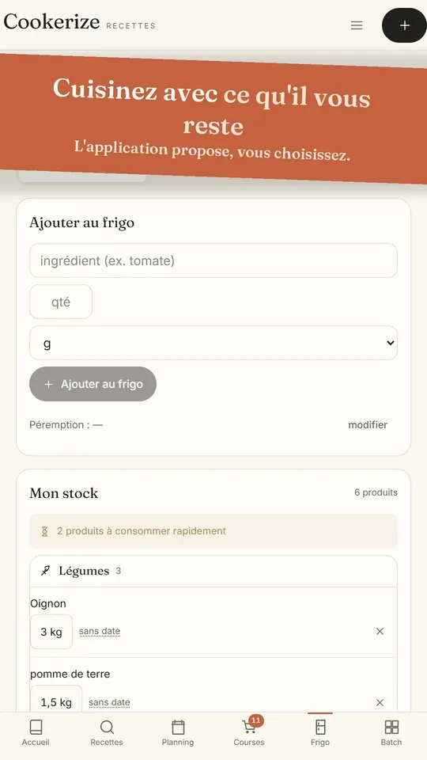
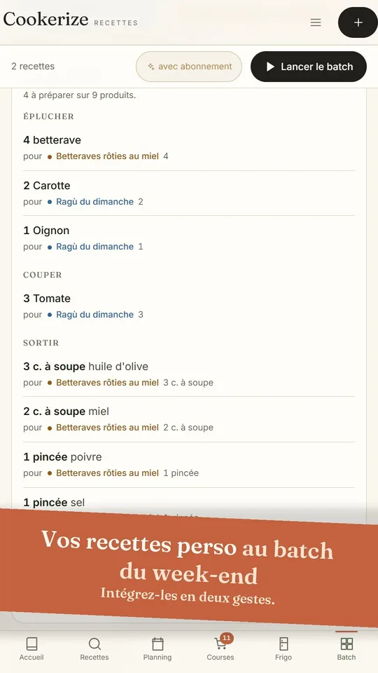
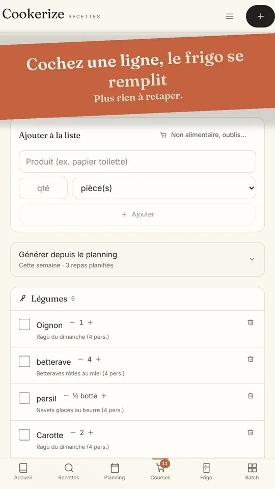

Quoi cuisiner ? Cookerize répond avant vous
Cookerize est une application de cuisine : elle répond à la question du soir avec ce que vous avez déjà chez vous. Écrivez votre recette, et les étapes s'écrivent toutes seules. Rentrez des courses, et le frigo se remplit d'un geste. Plus de 1100 recettes illustrées vous attendent déjà, et tout fonctionne hors ligne, sans compte obligatoire.
Être prévenu du lancement Voir les écrans
Bientôt sur Google Play (Android). Gratuit avec publicité ; l'abonnement retire la publicité et ouvre les fonctions avancées.
Scannez pour installer
Le code arrivera avec la publication sur Google Play.

Ce qu'il fait
Votre recette en quelques clics
Écrivez les ingrédients, Cookerize construit les étapes à votre place : votre recette est prête à suivre en cuisine avant que l'eau n'ait fini de bouillir.
Le frigo qui se remplit après les courses
Cochez une ligne de votre liste, et l'ingrédient file tout seul dans votre frigo. Plus rien à retaper.
Qu'est-ce que je peux cuisiner ?
Dites ce qu'il vous reste : l'application propose d'abord les recettes complètes, puis celles auxquelles il manque le moins.
Le batch, avec VOS recettes
Un dimanche à cuisiner pour la semaine ? Rassemblez vos propres recettes dans un seul plan : gestes groupés, minuteurs posés.
La bolognaise de mamie, combien de calories ?
Même sur une recette écrite par vous, Cookerize calcule calories, protéines et lipides — et la moyenne de votre semaine, jour par jour.
Plus de 1100 recettes, hors ligne, sans compte
Un carnet entier dans votre poche, sans réseau et sans rien créer pour commencer.
Et aussi : grammes ou onces, Celsius ou Fahrenheit, trois langues — et pour les abonnés, les apports nutritionnels détaillés, sans aucune publicité.
Cookerize en bref
Qu'est-ce que c'est ? Une application de cuisine, sur Android et sur le web, qui répond à la question du soir : « qu'est-ce qu'on mange ? ».
Pour qui ? Pour qui cuisine chez soi, seul ou en famille, et veut décider vite — avec ce qu'il a déjà.
Quel problème ? Décider du repas, ne pas racheter ce qu'on a déjà, et ne rien laisser s'abîmer au fond du frigo.
Ce qu'elle fait, précisément : écrire une recette à partir de ses ingrédients ; tenir le frigo, rangé par rayon ; proposer d'abord ce qu'on peut cuisiner sans repasser au magasin ; faire entrer dans le frigo ce qu'on coche sur la liste de courses ; réunir plusieurs recettes — les siennes comprises — dans une seule séance de cuisine ; calculer les calories, les protéines et les lipides d'une recette, et la moyenne de la semaine.
Ce qu'elle ne fait pas : aucun compte obligatoire pour commencer, aucune donnée qui sort du téléphone sans compte, aucun traceur ni mesure d'audience dans l'application, aucun fichier d'export de recettes, aucune publicité pour un abonné.
Comment ça marche : hors ligne, sans compte pour commencer, en français, en anglais et en espagnol.
En images






Gratuit ou abonné ?
Cookerize s'essaie sans compte et sans rien payer. Voici exactement ce que chaque version donne — ni plus, ni moins.
Gratuit
Gratuit
- 20 emplacements de recettes au départ.
- +1 emplacement chaque jour en regardant une publicité récompensée (une seule par jour), jusqu'à 2 000 emplacements.
- Séances de batch cooking de 2 recettes au maximum.
- Garde-manger tenu à la main.
- 5 aliments personnels au départ, +1 par publicité récompensée (jusqu'à 5 par jour), jusqu'à 1 000.
Abonné
Tarif affiché par Google Play, selon votre pays
- Aucune publicité, d'aucune sorte.
- L'emplacement du jour d'un simple geste.
- +5 emplacements par mois payé (+70 pour un paiement annuel), cumulés dans le même compteur.
- Séances de batch cooking jusqu’à 10 recettes (au lieu de 2).
- Apports nutritionnels détaillés.
- Garde-manger automatique.
- +5 aliments personnels par mois payé (+70 pour un paiement annuel), jusqu'à 1 000.
Vos emplacements s'accumulent : ils ne se perdent pas.
Aucune période d'essai gratuite. L'abonnement se paie, et la souscription comme le paiement passent par le magasin : l'application ne voit aucune donnée bancaire. Le prix affiché par le magasin fait foi.
Le lancement approche
Cookerize sort sur Google Play. Laissez votre adresse : vous serez prévenu le jour J.
Être prévenu du lancement